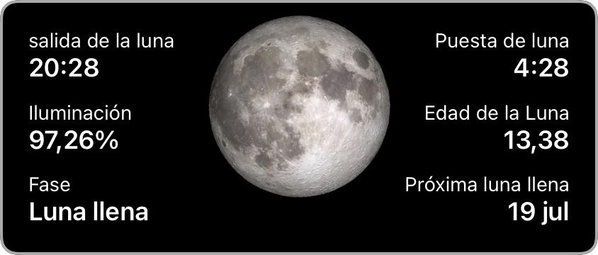
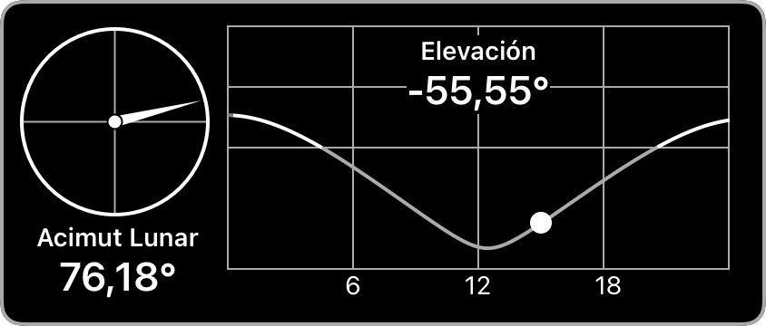
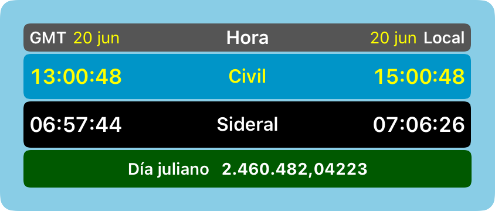
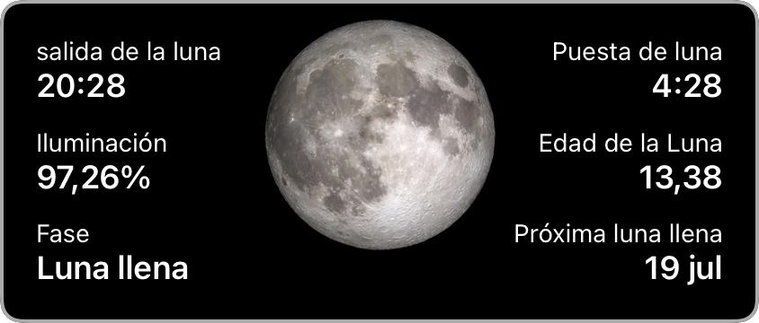
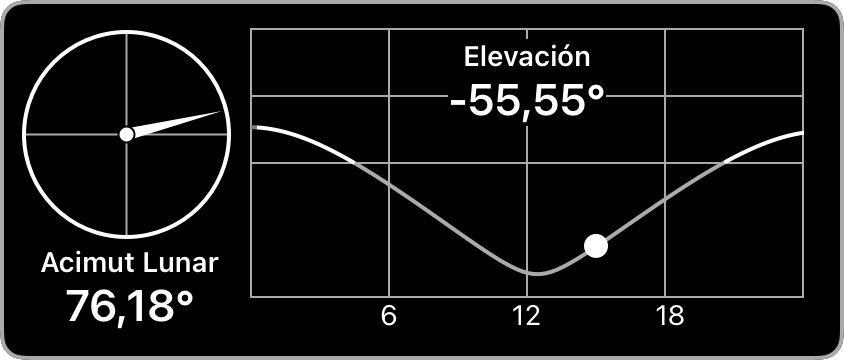
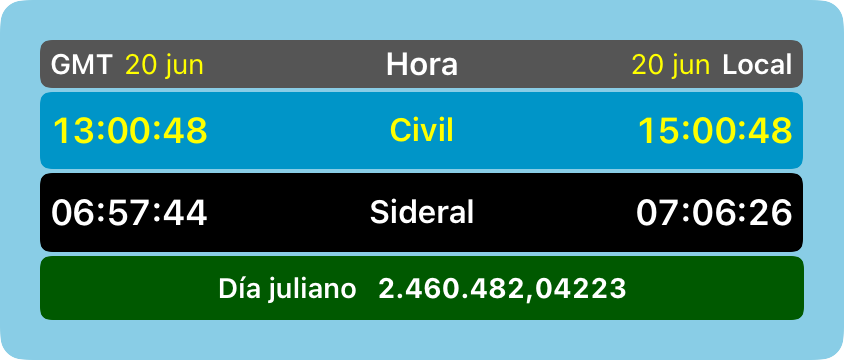

Luz MAX
¿Qué novedades trae la versión 4.0.3?
Novedades de la versión 4.0.1
Novedades de la versión 4.0.0
¡Toca para visitar nuestro grupo de usuarios en Facebook!
Novedades de la versión 3.1.6
26Novedades de la versión 3.1.5
Actualizada para iOS, iPadOS y macOS 26Novedades de la versión 3.1.4
Novedades de la versión 3.1.3
¿Qué novedades hay en la versión 3.1.1?
Widget de ubicación actual mejorado.
¿Qué novedades hay en la versión 3.0.7?
La versión 3.0 ha sido significativamente mejorada e incluye integración de datos lunares, catorce nuevos paneles de datos gráficos y más de cien mejoras. En particular, logra una eficiencia energética tres veces mayor que las versiones anteriores.
Desplácese hacia abajo para ver cada uno de los 14 nuevos paneles de datos. Cuando utilices la aplicación, toca cualquier panel para acceder a funciones adicionales.


 







Panel solar
Muestra el amanecer, el mediodía, el atardecer, la duración del día y los cambios con respecto al día anterior. Toca para explorar en diferentes fechas y horas.
Panel solar de elevación
Muestra elevación solar y azimut. Toca para explorar en diferentes fechas y horas.
Panel de ubicación
Muestra información de ubicación, elevación y zona horaria. Toca para ver el mapa y guardar más ubicaciones.
Panel de distancia
Muestra la distancia a la ubicación actual, el ecuador y el polo más cercano. Toca para ver el mapa y guardar más ubicaciones.
Panel Crepúsculo
Muestra las horas del crepúsculo. Toca para explorar en diferentes fechas y horas.
Panel de equinoccio
Muestra información sobre la duración del día para equinoccios y solsticios, junto con el día actual. Toca para explorar en diferentes fechas y horas.
Panel de Ecuación del Tiempo
Muestra información sobre la ecuación del tiempo, para los entusiastas de los relojes de sol. Toca para explorar en diferentes fechas y horas.
Panel de comparación
Compara la latitud, la duración del día y la elevación solar de dos ubicaciones. Toca para explorar en diferentes fechas y horas.
Panel Luna
Muestra la salida y puesta de la luna, la fase lunar y la iluminación. Toca para explorar en diferentes fechas y horas.
Panel de elevación de la luna
Muestra la elevación lunar y el azimut. Toca para explorar en diferentes fechas y horas.
Panel de astronomía
Muestra la hora GMT y local, la hora civil y sideral, así como el día juliano. Pulsa para explorar en diferentes fechas y horas.
Panel de notificaciones
Muestra el estado de las notificaciones que has configurado. Toca para administrar tus notificaciones.
Panel de configuración
Muestra botones para administrar la configuración, incluidas Opciones, Permisos, Calificar y revisar, e Información de la aplicación, Privacidad y Soporte. Toque para seleccionar opciones, revisar permisos, calificar y revisar esta aplicación y obtener la versión de la aplicación y otra información.
Panel de estadísticas
Muestra datos sobre su uso de la aplicación. Toca para ver cómo se mantienen privados estos datos.
Panel de películas e informes
Muestra botones para hacer una película o generar un informe. Toque para crear y ver una película o un informe.